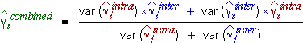

Standard errors for parameter estimates
We showed at the start of this section that it is possible to obtain two independent sets of estimates of the treatment effects in experiments where the treatments and blocks are not orthogonal. To summarise the results of the experiment, these must be combined in a single set of parameter estimates.
In general, the two sets of estimates of the parameters {γi} have different properties. Both sets of estimates are unbiased but they have different standard errors. If the design is balanced, there is a form of symmetry between the treatments and all parameters are estimated with equal accuracy. Two standard errors, one for the inter-block estimates of the {γi} and one for the intra-block estimates, are therefore enough to summarise the accuracy of the two sets of estimates.
(Note that the parameters {γi} are differences between the mean response for factor level i and the baseline level of the factor. The standard errors are therefore also the standard errors for the difference between any two factor levels.)
Combining inter-block and intra-block estimates
The most accurate linear combination of the two sets of parameter estimates gives higher weight to the estimate with lower variance. The best estimate can be shown to be:

In balanced designs, the inter-block and intra-block variances do not depend on i.
Unbalanced designs
Combining the inter-block and intra-block estimates becomes more difficult when the design is unbalanced since the standard errors of the inter-block and intra-block estimates vary depending on the factor levels being compared. A simple linear combination of parameter estimates is therefore no longer best but a better way to combine the inter-block and intra-block estimates is beyond the scope of this e-book.
In practice...
In experiments with balanced incomplete blocks, most of the information is usually supplied by the intra-block estimates.
Little information is usually lost by ignoring the inter-block estimates and using the intra-block estimates described in Section 6.6.
Catalyst and reaction time
The diagram below repeats the inter-block and intra-block estimates for the chemical experiment on the previous page, but also shows estimates of the standard errors of the parameters {γi}. (These are also the standard errors of the differences between any two factor effects.)
Observe that the standard errors are much higher for the inter-block estimates, so we should give much higher weight to the intra-block estimates when combining the two sets of estimates.
Click Combine estimates to show how the two sets of estimates are combined to form a single set of estimates. Note that these are very close to the intra-block estimates.